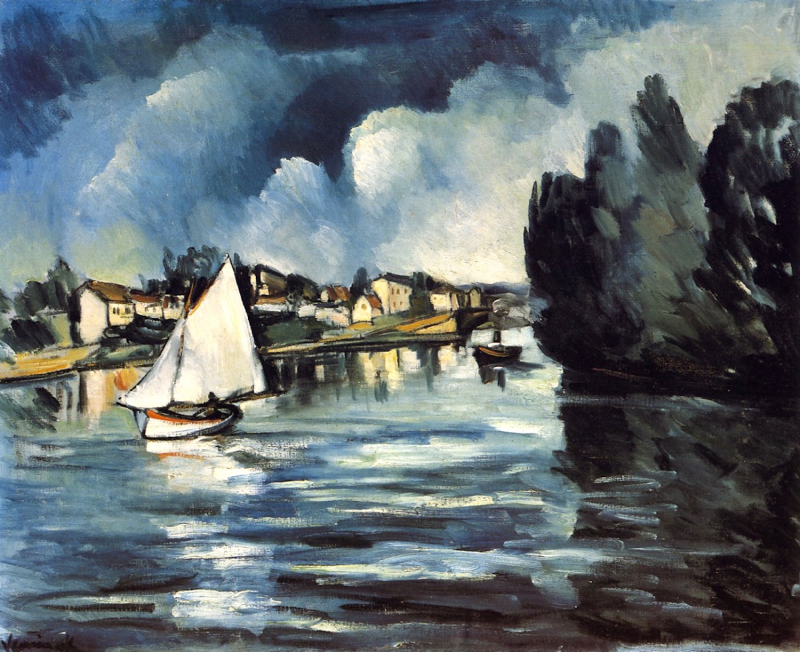

Obras en estado salvaje
Mujer con sombrero
Henri Matisse, 1905
La alegría de vivir
Henri Matisse, 1906

Lujo, calma y voluptuosidad
Henri Matisse, 1904
La ventana abierta
Henri Matisse, 1905
Retrato de vivir
André Derain, 1905
El puente de Charing Cross
André Derain, 1906
Baile de soldado en Suresnes
André Derain, 1903
La curva del camino
André Derain, 1906

Veleros de papel
Maurice de Vlaminck, 1908
Chaval, étang d' Ursine
Maurice de Vlaminck, 1905
Notre Dame en invierno
Albert Marquet, 1908
Notre Dame
Albert Marquet, 1904